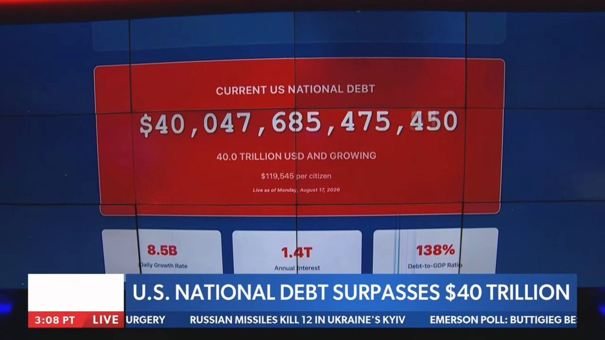
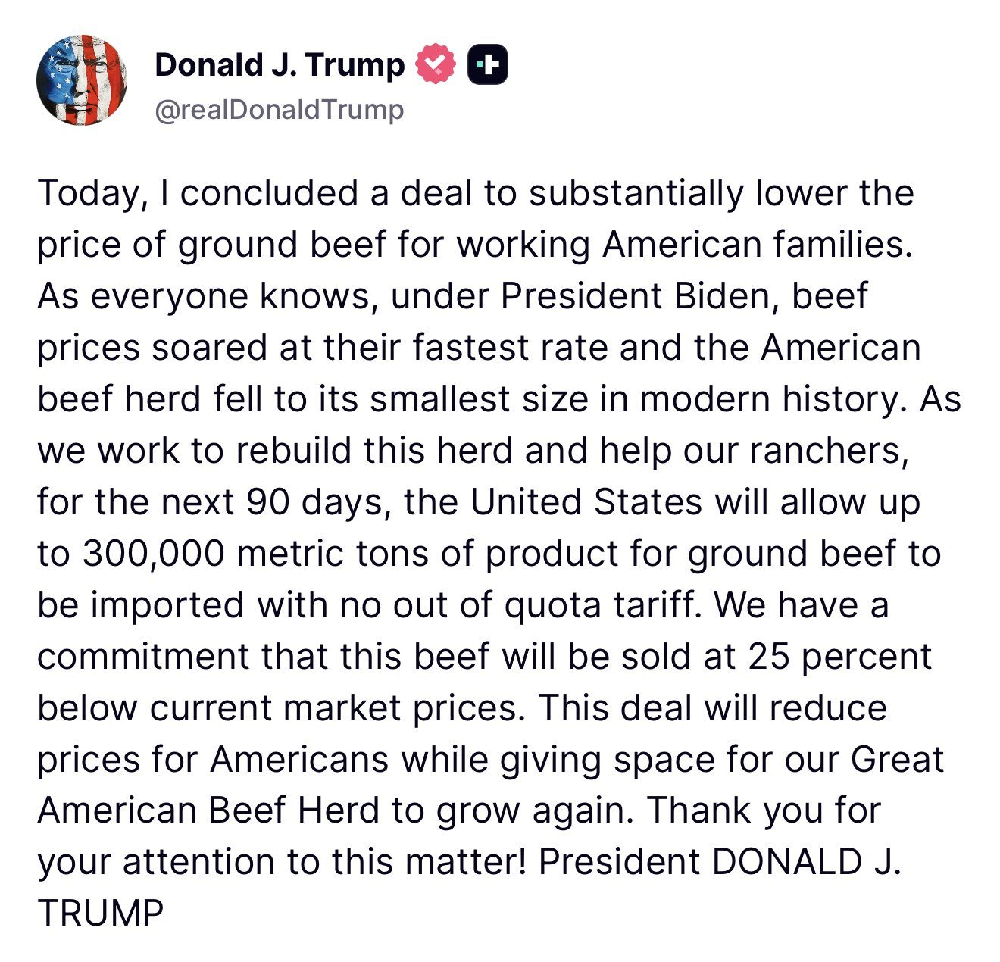
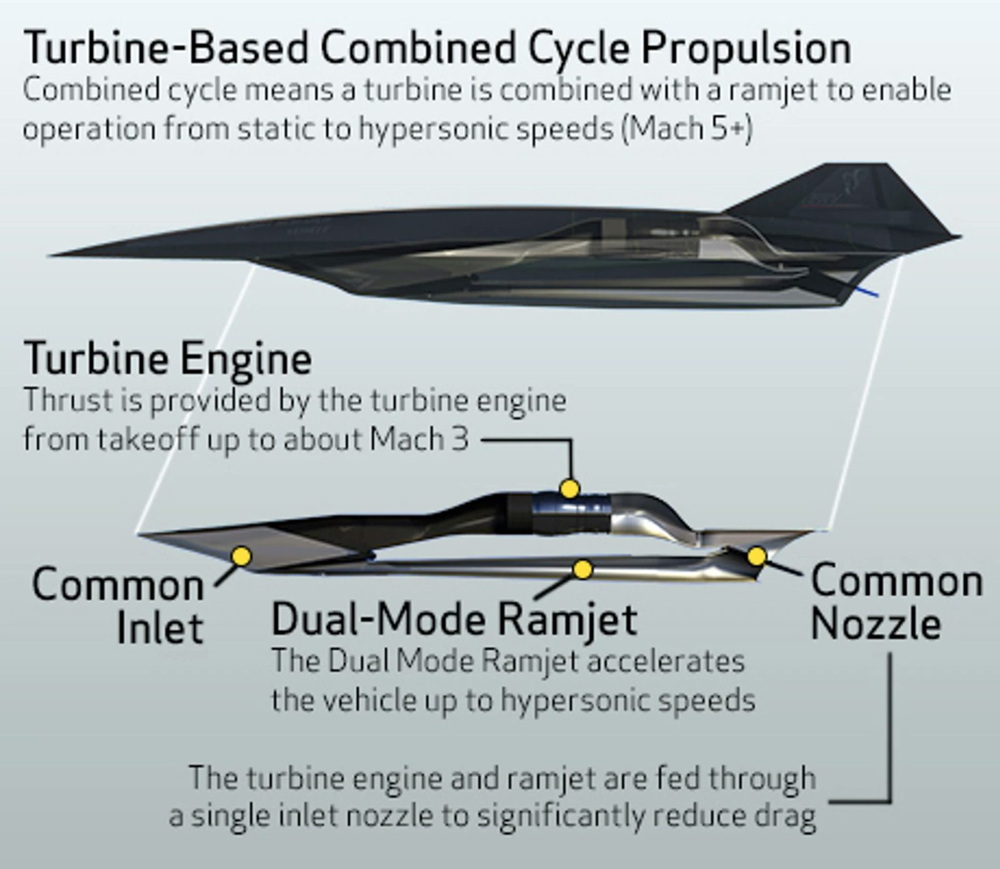
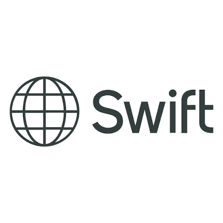

🚨BREAKING: Alberta now has a timeline to leave Canada. October 19, 2026: Albertans vote to schedule an independence referendum. Spring 2027: Albertans vote on independence itself. Canada's largest energy producer could be a new country within a year.
$500 million award will protect 2,300 American jobs and strengthen domestic steel production
WASHINGTON—The U.S. Department of Energy (DOE) today announced a $500 million award to support a $1 billion investment at Cleveland-Cliffs’ Middletown Works facility in Middletown, Ohio. Vice President JD Vance and U.S. Energy Secretary Chris Wright visited Middletown Works today to highlight the Trump Administration’s commitment to American steelworkers and the resurgence of American manufacturing.
The investment will modernize American steelmaking, protect 2,300 American jobs, and strengthen the domestic steel supply chain. The project advances President Trump’s commitment to put American workers first, bring investment back to American communities, and strengthen the industries critical to America’s economic and national security.
Cleveland-Cliffs determined that the business case for the original project scope no longer made sense given customers’ unwillingness to pay a “green premium” for steel. Working with DOE, Cleveland-Cliffs identified a viable alternative that will upgrade and improve the efficiency of the existing coal-fired blast furnace while also capturing and commercializing co-product blast furnace gas (BFG).
“President Trump is rebuilding America’s industrial base,” said Secretary Wright. “This investment puts American workers and American manufacturing first. It will modernize one of our nation’s critical steelmaking facilities, protect thousands of jobs, and strengthen our domestic steel production—keeping Ohio at the heart of American manufacturing and strengthening our national security.”
The investment will modernize critical steelmaking operations at Middletown Works by rebuilding and upgrading the plant’s main coal-fired ironmaking furnace, deploying AI to optimize furnace operations and improve energy efficiency, and building an on-site facility to convert steel mill process gases into electricity.
🚨 IT'S OFFICIAL: VP JD Vance confirms Treasury Secretary Scott Bessent has a plan to get us out of debt, and is acting on it
"Scott Bessent, the amazing treasury secretary, he has had a very discrete plan, supported by the president of the United States, to get the United States to a point where our economy is growing faster than our debt."
"And if you look, we are on track."
"So even though the debt is too high, even though we inherited this debt bomb for the Biden administration, we actually do have a plan to get the economy growing faster than the debt."
"And that's the most important thing. The issue that we've had under the Biden administration and what we're still kind of dealing with is that the debt was growing faster than American GDP."
"That's the problem. That's something that we're certainly fixing every single day in the Trump administration."

▶ Watch on X
JUST IN: U.S. electricians union leader calls for more data centers, arguing the AI infrastructure boom is creating a “generational” opportunity for blue-collar workers.
Effective immediately, these programs, along with Kosher and Amish programs, will be open AND marketed to ALL AMERICANS.
Mortgage fraud threatens trust in mortgage market, Bill Pulte warns
SpaceX wants up to a million satellites as orbital data centers. Half would ride the day-night line, sunlit while the ground below is dark.
Top and bottom are the same sky at the same moment. The only difference is how bright they're assumed to be.
@SciAm covered it today.
🇺🇸Lockheed Martin SR-72《The Son of Blackbird》
-Status: 🧪Hypersonic aircraft concept -Role: ISR & long-range strike -Target: Mach 6+ -Propulsion: Turbine-Based Combined Cycle (TBCC) -Engine: Turbine + dual-mode ramjet/scramjet -Crew: Unmanned (original concept) -Altitude:

The Hubble Space Telescope mission, now over 36 years old, is a story of triumphs and near disasters.
In June, historians, scientists, engineers, and program leaders gathered to reflect on Hubble's legacy and the lessons that could help shape NASA's next great telescopes. Read their comments in the newly released transcript:
It's giving "remember who you are" 🦁
Observing across the starry “plains” of space, @NASAWebb has taken new images of NGC 2392, nicknamed the Lion Nebula.
Read more about this nebula and the reason for its distinct appearance here:
JUST IN: The OCC aims to finalize GENIUS Act stablecoin rules by November, with Comptroller Gould saying the agency will begin processing applications in the new year.
🔥LATEST: HSBC and Standard Chartered completed Swift’s FIRST live blockchain payment, settling tokenised deposits across borders in real time.

🚨 BREAKING: ActBlue cofounder Matt DeBergalis just PANICKED and PLEADED THE 5TH in a closed-door deposition with House committee investigators — Fox News
This comes after ActBlue is accused of allowing FOREIGN DONATIONS that INFILTRATE US politics for Democrats, without proper measures to stop it
Here's the shocking exchange between Rep. Jim Jordan and an ActBlue official when they also pleaded the 5th. SHUT IT DOWN.
JORDAN: Your board chairman said ActBlue accepted up to 38 million contributions in 2024 that had the signs of foreign origin. How much fraud is too much fraud?
ACTBLUE: On the advice of counsel, I respectfully declined to answer the question pursuant to my Fifth Amendment rights under the Constitution.
JORDAN: How many foreign contributions did ActBlue accept?
ACTBLUE: On the advice of counsel, I respectfully declined to answer the question pursuant to my Fifth Amendment rights under the Constitution.
JORDAN: How much money did ActBlue accept from Russia?
ACTBLUE: On the advice of counsel, I respectfully declined to answer the question pursuant to my Fifth Amendment rights under the Constitution.
JORDAN: Why did your entire legal team quit? Your in-house legal team?
ACTBLUE: On the advice of counsel, I respectfully declined to answer the question pursuant to my Fifth Amendment rights under the Constitution.
JORDAN: Did your legal team quit because of reduced fraud standards?
ACTBLUE: On the advice of counsel, I respectfully declined to answer the question pursuant to my Fifth Amendment rights under the Constitution.
JORDAN: We won't keep you here all day, but let me just do one more. Did you weaken your fraud standards to help Democrats?
ACTBLUE: On the advice of counsel, I respectfully declined to answer the question pursuant to my Fifth Amendment rights under the Constitution.
JUST IN: Pentagon orders Harvard, MIT, & 28 other top U.S. colleges to review & terminate partnerships tied to China, Russia, & Iran, or risk losing federal research funding.
#BREAKING: DOJ to question FBI officials behind the 2022 Mar-a-Lago search.
BREAKING: FBI Caught Withholding Documents in Seth Rich Case
Bloomberg Report: The DOJ plans to deploy 1,000 election monitors across the U.S. for the November midterms.
JUST IN: 🇺🇸🇨🇺 US imposes new sanctions on Cuba.